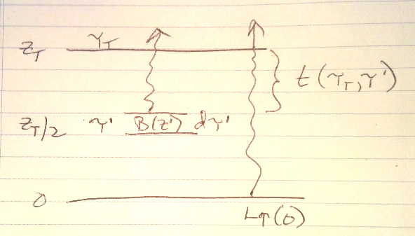

7.3. Solutions: sample questions II¶
7.3.1. Schwartzchild with changing temperature¶
From The Schwartzchild Equation
Equation (6.2) allows you to find the radiance at height \(z_T\) if given enough information about the atmosphere.
(7.3)¶\[L^\uparrow (\tau_T) = L^\uparrow (0) \, t_{tot} + \int_0^{z_T} t(\tau_T, \tau^\prime) B(T^\prime)\, d\tau^\prime\]where \(T^\prime\) is the layer temperature at optical depth \(\tau^\prime\).
Draw a sketch of the layer, and label \(L^\uparrow (0)\), \(z_T\), \(t_{tot}\), \(t(\tau_T,\tau^\prime)\), \(d\tau^\prime\), \(B(\tau^\prime)\), where \(z^\prime= z_T/2\)
Answer:

Use the definition of the transmissivity \(t(\tau_T, \tau^\prime)\) to prove that
(7.4)¶\[\int_0^{z_T} t(\tau_T,\tau^\prime) B(\tau^\prime)\, d\tau^\prime = \int_0^{z_T} B(t^\prime)\, dt^\prime\](note the notation change here – instead of \(B(T^\prime)\) I’m writing \(B(\tau^\prime)\) or \(B(t^\prime)\) to emphasize that we can’t take the Planck emission outside of the height integral. It’s still the same function of temperature, it’s just another way to note that temperature depends on the vertical coordinate).
Answer
The definition:
(7.5)¶\[ t(\tau_T,\tau^\prime) = \exp( - (\tau_T - \tau^\prime))\]From Beer’s law notes on differentials:
(7.6)¶\[ dt = \frac{dt}{d\tau^\prime} d\tau^\prime\]So take the derivative of (7.5):
(7.7)¶\[ \frac{dt}{d\tau^\prime} = \exp( - (\tau_T - \tau^\prime)) = t(\tau_T,\tau^\prime)\]and therefore:
(7.8)¶\[ dt^\prime = t(\tau_T,\tau^\prime) d\tau^\prime\]where the prime is there to remind us that it is changing as \(\tau^\prime\) changes.
If we substitute (7.8) into the right hand side of (6.3) we get the left hand side.
{kind=link}
7.3.2. Beer’s law¶
From Beers and inverse squared laws and Finding the flux given the radiance
A 5 km thick ozone layer absorbs 30% of the ultraviolet sunlight that passes through it when the sun is directly overhead.
What is the vertical optical thickness of the layer in the ultraviolet? (UV radiation is not reflected, only absorbed/transmitted)
Answer::
absorption = 0.3 so t=0.7 = \(\exp(-\tau)\)
therefore \(\tau = -\ln(0.7) = 0.36\)
What is the value of the absorptivity at 4pm, when the sun is \(60^\circ\) away from the zenith?
Answer:
The path is going to be longer by \(1/\cos(60\ deg)\) = 2 so the new transmissivity will be
\(t = \exp( - 2 * 0.36) = 0.49\)
and absorptivity will be \(a = (1 - t) = 0.51\)
If the UV solar flux is 200 \(W\,m^{-2}\) for overhead sun, what is the value of the flux at 4pm?
Answer:
The flux at the surface in the direction of the solar beam is
\(S_{sfc} = t \times S_0 = 0.49 \times 200 = 98\ W\,m^{-2}\)
But because the beam is coming in at a 60 degree angle, the area that the power is spread over will be larger by \(1/\cos(60)\) = 1/0.5 = 2.
So \(E_{sfc} = 98/2 = 49\ W\,m^{-2}\)
7.3.3. Hydrostatic equation¶
From Hydrostatic balance and the Weighting functions for temperature retrieval notebook.
A 10 km thick layer of an an atmosphere has constant temperature \(T_{atm}\)=280 K, a pressure/density scale height of \(H=8\ km\) and is filled with a gas with a mass absorption coefficient of \(k_\lambda\) = 0.2 at a wavelength of 10 . Underneath this layer is a black surface with a temperature of 290 K. The atmosphere is in hydrostatic equilibrium, the gas has a constant mixing ratio and a density at the surface of \(\rho_0 = 10^{-3}\) . Find:
The vertical optical depth of the layer
Answer:
pressure and density have the same scale height since the atmosphere is isothermal so the gas density is
(7.9)¶\[ \rho(z) = \rho_0 \exp( -z/H)\]Integrate the optical depth from 0 to 10 km:
(7.10)¶\[\begin{split}\begin{aligned} \tau &= \int_0^{10} \rho_0 \exp(-z/H) k_\lambda dz = - H \rho_0 k_\lambda (\exp(-10/8)-1)\\ \tau &= 8000 \times 10^{-3} *0.2 * (1 - 0.29) = 1.14 \end{aligned}\end{split}\]The layer transmission for radiance going straight up.
Answer:
\(\exp(-\tau) = \exp(-1.14) = 0.3195\)
The radiance, in at the top of the layer due to the surface and atmosphere.
Answer:
From the attached graph we know that at \(\lambda=10\) microns we have the following:
temp=290 K,
\(B_{10} \approx 8.4\ W\,m^{-2}\,\mu m^{-1}\,sr^{-1}\)
\(temp=280 K, B_{10} \approx 7\ W\,m^{-2}\,\mu m^{-1}\,sr^{-1}\)
Using the equation for an isothermal layer from (4.10)
\[\begin{split}\begin{aligned} L_\uparrow(\tau_T) &= L_0 \exp( - \tau_T ) + (1 - \exp( - \tau_T)) B_\lambda(T) \\ L_\uparrow(\tau_T) &= 8.4 \times \exp( - 1.141) + 7 \times (1 - \exp(-1.141)) = 7.447\ W\,m^{-2}\,\mu m^{-1}\,sr^{-1} \end{aligned}\end{split}\]The brightness temperature \(T_b\) (K) that a satellite would measure at \(\lambda\)=10 if there were no absorption/emission above 10 km. (see Planck function curves on next page).
Answer:
Reading from the Planck curves figure:
\(L_{10} = 7.4\ W\,m^{-2}\,\mu m^{-1}\,sr^{-1}\)
which gives \(T_{B} \approx 284\ K\)